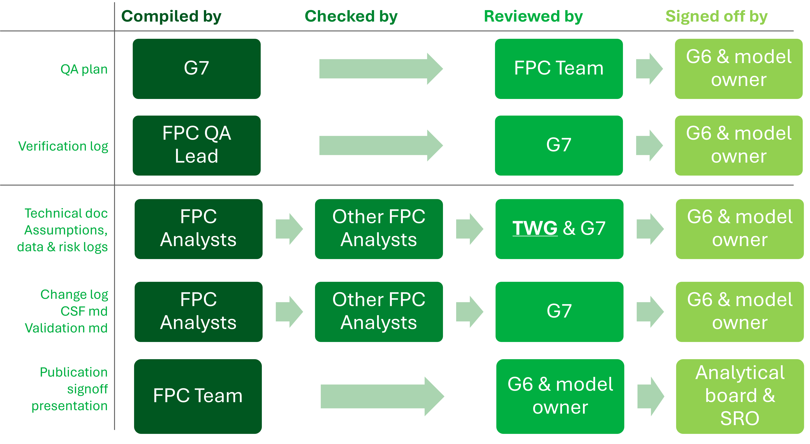

Extended Producer Responsibility for packaging (pEPR) will move the full cost of dealing with packaging waste from households away from local taxpayers and councils to the packaging producers (applying the ‘polluter pays principle’), giving producers responsibility for the costs of their packaging throughout its life cycle. This will encourage producers to reduce their use of packaging and use packaging which is easier to recycle. Producers will pay more for less sustainable packaging, incentivising packaging that uses less material and is easier to recycle. Producers will also be expected to meet ambitious new recycling targets and use clear unambiguous labelling of recyclability to make it easy for consumers to do the right thing.
pEPR will be introduced in a phased manner from 2025, initially focussing on payments for household packaging waste managed by local authorities, with such payments being determined from 1 April 2025. While waste management is a devolved policy area, the pEPR scheme will be implemented simultaneously in England, Wales, Scotland and Northern Ireland and administered by a single scheme administrator, hosted by Defra (the UK government Department for the Environment Food and Rural Affairs), known as PackUK.
The LAPCAP (Local Authority Packaging Cost And Performance) Model will be used to calculate the Basic Payment Amount paid to each Local Authority from 1 April 2025 for the collection and disposal of household packaging waste (excluding street bins and litter). The model will also be used to calculate the total cost for each packaging material, which will be divided between those producers who are obligated under the scheme.
The LAPCAP model is being developed by a team within Defra, but requires approval by all 4 participating nations. PackUK (whose governance includes all 4 UK nations) has the responsibility to approve the modelling approach. Prior to establishment on PackUK the 4-nation CPR Programme Board stood in to govern the model.
This document details the background, theory and plan for model development, quality assurance and signoff processes of LAPCAP. It includes detail on how, when and by whom model, data or assumption changes will be assured. This includes a list of responsibilities relating to the model, who the model owner is, the governance structure and decision-making process supporting the model.
The LAPCAP handbook gives practical steps and detail for how this will be achieved and should be used by FPC team members to carry out the processes correctly.
The Macpherson Review assesses business criticality on the basis of “the extent to which error could lead to serious financial, legal or reputational damage”. An assessment of this is shown below.
| Risks | Example/explanation | Risk rating |
| Financial | The model will be used to determine fees and payments of over £1 billion. | High |
| Legal | There is a strong chance that stakeholders could challenge the fees or payments. | High |
| Reputational | This is a high profile scheme and its failure would lead to criticism of DEFRA and government. | High |
This model is high risk in all of these categories, hence should be considered business critical. It is also highly complex, relying on many data sources and assumptions. As a result it merits QA at the upper end of robustness.
Decision-makers need information on the uncertainty of decision outcomes i.e. the range of outcomes that may occur and their relative likelihoods; in order to act appropriately and be confident with the messages they communicate. The model risk log identifies these more detailed risks and proposed mitigations. It can be accessed here: Risk register v2.0.xlsm, and is maintained by David Akpan through monthly reviews with the FPC G7 lead analysts.
A large number of stakeholders are involved in quality assurance of the LAPCAP model. We have split the roles into “signatory” roles which are directly responsible or accountable for producing or approving the model, and “consultative” roles who provide advice or evidence which could improve the model.
These are laid out below in hierarchical order:
Accounting Officers of the 4 nations (Defra permanent secretary and equivalents in devolved administrations)
Senior Responsible Officers (SROs) are the members of the PackUK Executive Committee
Analytical Board
Model Owner
Sarah Andrews (Deputy Director of Circular Economy Evidence and Analysis)
The model owner manages the analysts and focuses on ensuring that the model meets policy goals, including by ensuring that the modelling team is sufficiently resourced.
Fees and Payments Calculator modelling team which is made up of
These are stakeholders who generally have expertise in some area relevant to the model development. Their advice is used to support assumptions made in the modelling, and should be recorded in QA logs with links to evidence such as meeting minutes or email chains.
Regularly consulted stakeholders include:
Defra legal advisers – to advise on interpretation of the (draft) pEPR regulations, which specify what the model should/may do
LA payments modelling Technical Working Group (TWG) – comprising expert waste advisors to Defra and the devolved administrations, advising on the adequacy of model assumptions
Local authorities (via the LA Waste Officer Sounding Board) – selected Waste Officers from local authorities across the UK to test the validity of assumptions relating to local authority operations
Local authorities (via representative bodies, including bodies for special types of LA such as disposal authorities) – such as WIDP, NAWDO, LARAC and more, used similarly to the above
Government Actuary’s Department – to date external QA, peer review and advice on best practice has been provided by GAD
Named individuals correct as of 14/4/2025
In order to ensure the appropriate level of robust QA, we are taking a multi-layered approach (as recommended by Chart 2.C in the MacPherson Review and also re-used in the Aqua Book). Below is a list of the steps taken within this:
To ensure outputs can be reproduced:
all calculation steps will be scripted, using the R language;
model code is version controlled in Github, with a clearly defined versioning, tagging and publication process;
data is stored in Amazon S3 and an automated, flexible data pipeline has been developed to version control this data, ensuring all versions of the model have access to the correct data.
To verify the model is error free:
Github is set to require compulsory code review by a second analyst before code is merged. This includes a quality assurance checklist which enforces verification and validation processes are followed.
In terms of verification the checklist includes:
We have had versions of the model externally audited by the Government Actuary’s Department.
We have appointed a quality assurance lead to monitor and log the QA activities of the team and ensure they are of sufficient quality.
To validate the model works as intended:
The pull request checklist enforces:
We have made comparisons of LAPCAP against a second model known as the top-down model.
We have tested the modelling approach, model structure, quality assurance processes, and outputs with our consultative stakeholders as detailed above.
We have put in place a formal signoff hierarchy ensuring robust and appropriate oversight at every stage.
To make our analysis simple to understand and communicate:
The below provides an outline of who is responsible for signoff of various pieces of model documentation:

For more information, please see 05 Signoff Responsibilities.xlsx
Once we have a major version of LAPCAP ready for publication this will be communicated publicly via the following processes.
Sending of Notification Letters - these give each individual local authority a breakdown of their payment, with accompanying explanation, under a number of headings such as collection and disposal tonnages and costs, as well as split by materials.
Standard templates have been developed by the PackUK FPC Delivery team and these have been signed off following their signoff processes.
These will then be converted to R markdown documents and automatically populated, and finally distributed by the digital team.
Publication of Local Authority guidance - a comprehensive local authority guidance document, giving a full guide to the model will be published alongside the letters. This differs from the technical guide in that it will be non-technical, using simple everyday language and laid out in terms that Local authority waste officers can understand.
This will include a ‘worked example’ derived from the example calculations in the technical document.
Again these documents have been developed by the PackUK FPC Delivery team and these have been signed off following their signoff processes.
These publications will be followed up by a webinar at which local authorities will have the opportunity to pose any further questions not answered by the previous documents.